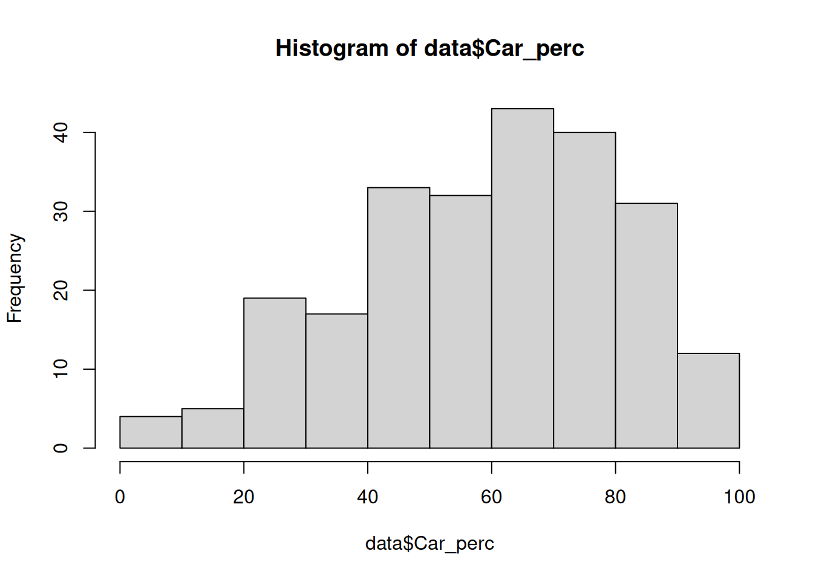
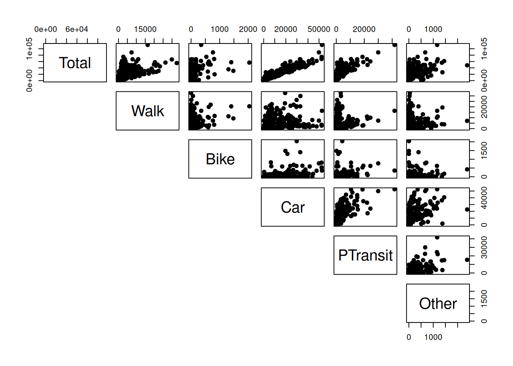
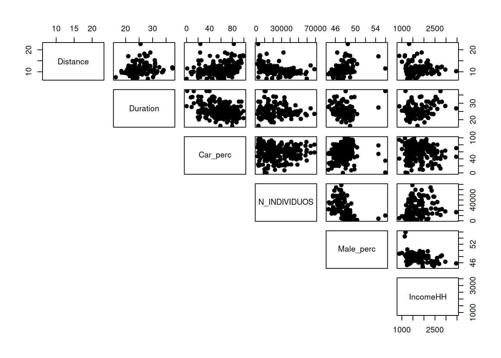
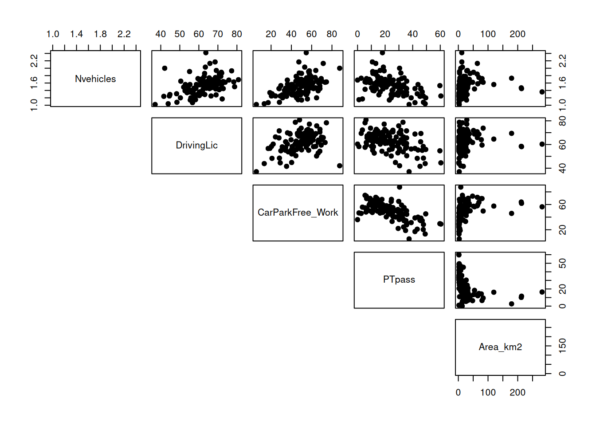
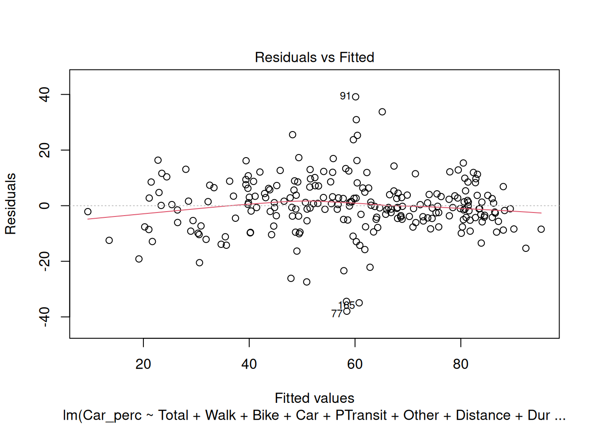
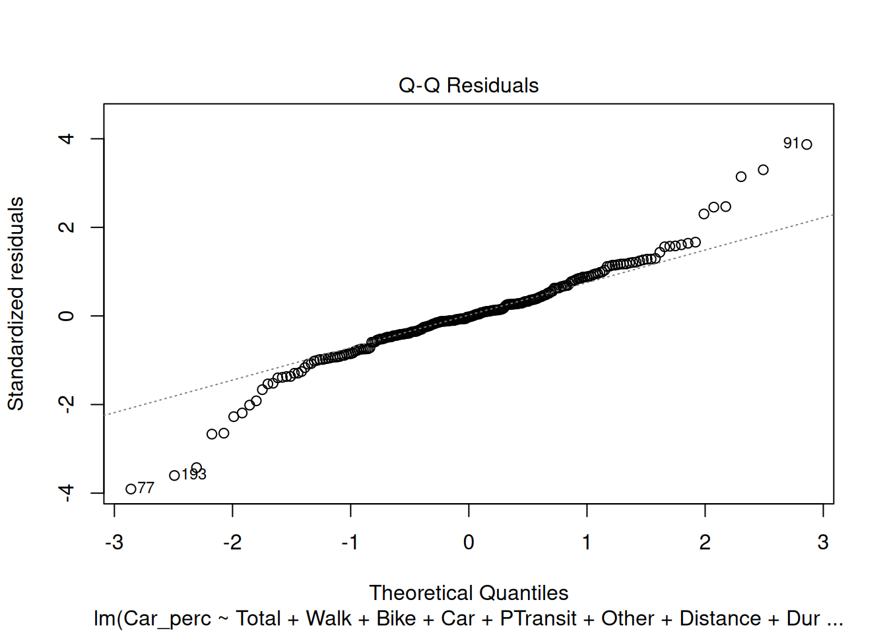
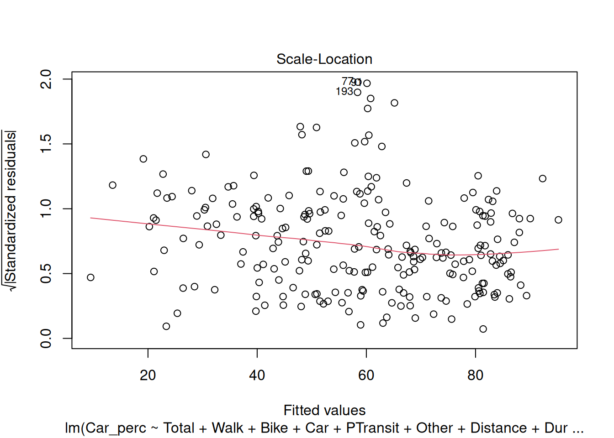
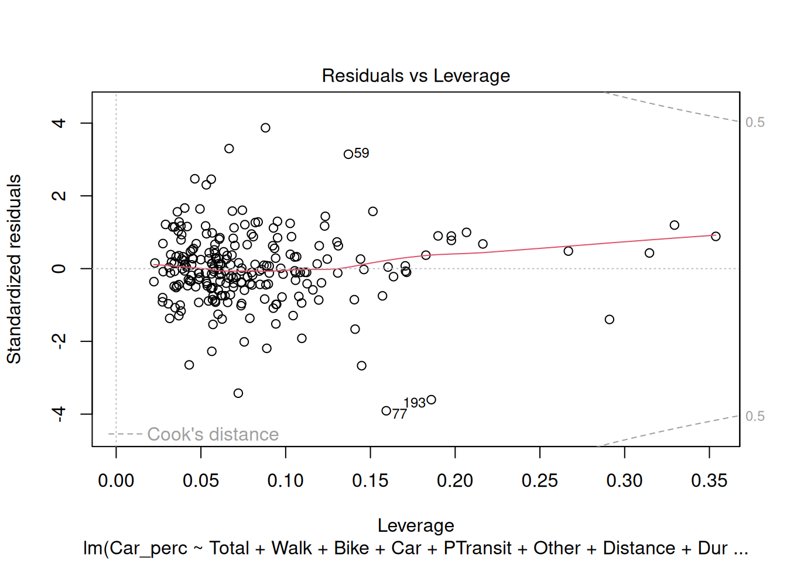

library(tidyverse) # Pack of most used libraries for data science
library(skimr) # summary of the data
library(DataExplorer) # exploratory data analysis
library(corrplot) # correlation plots
library(car) # Testing autocorrelation (Durbin Watson)
library(olsrr) # Testing multicollinearity (VIF, TOL, etc.)6 Multiple Linear Regression
Do it yourself with R
Copy the script MultipleLinarRegression.R and paste it in your session.
Run each line using CTRL + ENTER
Your task: Estimate a linear regression model that predicts the car percentage per district.
6.1 Load packages
6.2 Dataset
The database used in this example is a treated database from the Mobility Survey for the metropolitan areas of Lisbon in 2018 (INE 2018).
Included variables:
Origin_dicofre16- Code of Freguesia (district) as set by INE after 2016 (Distrito + Concelho + Freguesia), for trip originTotal- number of trips with origin at each districtWalk- number of walking tripsBike- number of bike tripsCar- number of car trips. Includes taxi and motorcycle.PTransit- number of Public Transit tripsOther- number of other trips (truck, van, tractor, aviation)Distance- average trip distance (km)Duration- average trip duration (minutes)Car_perc- percentage of car tripsN_INDIVIDUOS- number of residents (INE 2022)Male_perc- percentage of male residents (INE 2022)IncomeHH- average household incomeNvehicles- average number of car/motorcycle vehicles in the householdDrivingLic- percentage of car driving licence holdersCarParkFree_Work- percentage of respondents with free car parking at the work locationPTpass- percentage of public transit monthly pass holdersinternal- binary variable (factor).Yes: trip with same TAZ origin and destination,No: trips with different destinationLisboa- binary variable (factor).Yes: the district is part of Lisbon municipality,No: otherwiseArea_km2- area of inOrigin_dicofre16, in km2
Import dataset
data = readRDS("../data/IMOBmodel.Rds")
data_continuous = data |> select(-Origin_dicofre16, -internal, -Lisboa) # Exclude categorical variablesShow summary statistics
skim(data)| Name | data |
| Number of rows | 236 |
| Number of columns | 20 |
| _______________________ | |
| Column type frequency: | |
| character | 1 |
| factor | 2 |
| numeric | 17 |
| ________________________ | |
| Group variables | None |
Variable type: character
| skim_variable | n_missing | complete_rate | min | max | empty | n_unique | whitespace |
|---|---|---|---|---|---|---|---|
| Origin_dicofre16 | 0 | 1 | 6 | 6 | 0 | 118 | 0 |
Variable type: factor
| skim_variable | n_missing | complete_rate | ordered | n_unique | top_counts |
|---|---|---|---|---|---|
| internal | 0 | 1 | FALSE | 2 | Yes: 118, No: 118 |
| Lisboa | 0 | 1 | FALSE | 2 | No: 188, Yes: 48 |
Variable type: numeric
| skim_variable | n_missing | complete_rate | mean | sd | p0 | p25 | p50 | p75 | p100 | hist |
|---|---|---|---|---|---|---|---|---|---|---|
| Total | 0 | 1 | 22457.00 | 19084.45 | 361.00 | 5917.75 | 17474.00 | 33377.50 | 112186.00 | ▇▃▂▁▁ |
| Walk | 0 | 1 | 5383.44 | 6224.84 | 0.00 | 763.25 | 3125.00 | 8298.50 | 32646.00 | ▇▂▁▁▁ |
| Bike | 0 | 1 | 107.03 | 248.65 | 0.00 | 0.00 | 13.50 | 98.75 | 2040.00 | ▇▁▁▁▁ |
| Car | 0 | 1 | 13289.24 | 12351.61 | 0.00 | 3243.00 | 9008.00 | 21248.75 | 52631.00 | ▇▃▂▁▁ |
| PTransit | 0 | 1 | 3473.79 | 5467.82 | 0.00 | 249.00 | 1057.00 | 4853.00 | 41672.00 | ▇▁▁▁▁ |
| Other | 0 | 1 | 203.45 | 336.04 | 0.00 | 2.00 | 44.00 | 281.50 | 2391.00 | ▇▁▁▁▁ |
| Distance | 0 | 1 | 11.14 | 2.66 | 6.84 | 9.54 | 10.32 | 12.10 | 22.66 | ▇▇▂▁▁ |
| Duration | 0 | 1 | 25.42 | 3.91 | 16.30 | 23.00 | 24.70 | 27.73 | 37.42 | ▁▇▆▂▁ |
| Car_perc | 0 | 1 | 59.00 | 21.56 | 0.00 | 45.40 | 62.62 | 75.72 | 99.27 | ▁▃▆▇▅ |
| N_INDIVIDUOS | 0 | 1 | 24323.80 | 16438.04 | 1566.00 | 11060.00 | 20855.00 | 36079.00 | 68649.00 | ▇▆▅▃▁ |
| Male_perc | 0 | 1 | 47.54 | 1.57 | 44.61 | 46.58 | 47.50 | 48.29 | 55.94 | ▅▇▂▁▁ |
| IncomeHH | 0 | 1 | 1732.55 | 453.11 | 884.46 | 1417.76 | 1594.73 | 1953.50 | 3462.32 | ▃▇▃▁▁ |
| Nvehicles | 0 | 1 | 1.53 | 0.24 | 1.02 | 1.35 | 1.54 | 1.67 | 2.42 | ▃▇▆▂▁ |
| DrivingLic | 0 | 1 | 62.50 | 8.12 | 37.04 | 57.67 | 63.00 | 68.84 | 80.79 | ▁▂▇▇▂ |
| CarParkFree_Work | 0 | 1 | 49.30 | 14.30 | 5.47 | 40.39 | 50.51 | 57.92 | 87.60 | ▁▃▇▇▁ |
| PTpass | 0 | 1 | 23.82 | 12.87 | 0.00 | 13.41 | 22.72 | 32.94 | 60.45 | ▅▇▇▂▁ |
| Area_km2 | 0 | 1 | 25.55 | 42.58 | 1.49 | 5.04 | 11.60 | 28.51 | 282.13 | ▇▁▁▁▁ |
The dependent variable is continuous.
6.3 Check the assumptions
Before running the model, you need to check if the assumptions are met.
- The dependent variable is normally distributed
- Linear relationship between the dependent variable and the independent variables
- No multicollinearity between independent variables (or only very little)
- The observations are independent
- Constant Variance (Assumption of Homoscedasticity)
- Residuals are normally distributed
6.4 Assumption 1: Normal distribution
The Dependent Variable is be normally distributed.
Check the histogram of Car_perc:
hist(data$Car_perc)
If the sample is small (< 50 observations), we use Shapiro-Wilk test:
shapiro.test(data$Car_perc)
Shapiro-Wilk normality test
data: data$Car_perc
W = 0.97284, p-value = 0.0001709If not, use the Kolmogorov-Smirnov test:
ks.test(
data$Car_perc,
"pnorm",
mean = mean(data$Car_perc),
sd = sd(data$Car_perc)
)
Asymptotic one-sample Kolmogorov-Smirnov test
data: data$Car_perc
D = 0.072477, p-value = 0.1675
alternative hypothesis: two-sidedThe null hypothesis for both tests is that the distribution is normal. Therefore, for the distribution to be normal, the pvalue must be > 0.05 and the null hypothesis is not rejected. From the output obtained we can assume normality.
6.5 Assumption 2: Linear relationship
There is a linear relationship between dependent variable (DV) and independent variables (IV).
We can check this assumption by plotting scatterplots of the DV against each IV:
plot(x = data$Car_perc, y = data$Total, xlab = "Car_perc (%)", ylab = "Total (number of trips)")
plot(x = data$Car_perc, y = data$Walk, xlab = "Car_perc", ylab = "Walk")
plot(x = data$Car_perc, y = data$Bike, xlab = "Car_perc", ylab = "Bike")
plot(x = data$Car_perc, y = data$Car, xlab = "Car_perc", ylab = "Car")
plot(x = data$Car_perc, y = data$PTransit, xlab = "Car_perc", ylab = "PTransit")
plot(x = data$Car_perc, y = data$Other, xlab = "Car_perc", ylab = "Other")
plot(x = data$Car_perc, y = data$Distance, xlab = "Car_perc", ylab = "Distance")
plot(x = data$Car_perc, y = data$Duration, xlab = "Car_perc", ylab = "Duration")
plot(x = data$Car_perc, y = data$N_INDIVIDUOS, xlab = "Car_perc", ylab = "N_INDIVIDUOS")
plot(x = data$Car_perc, y = data$Male_perc, xlab = "Car_perc", ylab = "Male_perc")
plot(x = data$Car_perc, y = data$IncomeHH, xlab = "Car_perc", ylab = "IncomeHH")
plot(x = data$Car_perc, y = data$Nvehicles, xlab = "Car_perc", ylab = "Nvehicles")
plot(x = data$Car_perc, y = data$DrivingLic, xlab = "Car_perc", ylab = "Driving License")
plot(x = data$Car_perc, y = data$CarParkFree_Work, xlab = "Car_perc", ylab = "Free car parking at work")
plot(x = data$Car_perc, y = data$PTpass, xlab = "Car_perc", ylab = "PTpass")
plot(x = data$Car_perc, y = data$internal, xlab = "Car_perc", ylab = "internal trips")
plot(x = data$Car_perc, y = data$Lisboa, xlab = "Car_perc", ylab = "Lisboa")
plot(x = data$Car_perc, y = data$Area_km2, xlab = "Car_perc", ylab = "Area_km2")Or you can make a pairwise scatterplot matrix, that compares every variable with each other:
# pairs(data_continuous, pch = 19, lower.panel = NULL) # we have too many variables, let's split the plots
pairs(data_continuous[,1:6], pch = 19, lower.panel = NULL)
pairs(data_continuous[,7:12], pch = 19, lower.panel = NULL)
pairs(data_continuous[,13:17], pch = 19, lower.panel = NULL)
6.6 Assumption 3: No multicollinearity
Check the correlation plot before choosing the variables.
Declare the model
Use CTRL + SHIFT + C to comment/uncomment lines (variables)
# names(data) # to see the names of the variables
model = lm(
Car_perc ~ Total +
Walk +
Bike +
Car +
PTransit +
Other +
Distance +
Duration +
N_INDIVIDUOS +
Male_perc +
IncomeHH +
Nvehicles +
DrivingLic +
CarParkFree_Work +
PTpass +
internal +
Lisboa +
Area_km2,
data = data
)
summary(model)
Call:
lm(formula = Car_perc ~ Total + Walk + Bike + Car + PTransit +
Other + Distance + Duration + N_INDIVIDUOS + Male_perc +
IncomeHH + Nvehicles + DrivingLic + CarParkFree_Work + PTpass +
internal + Lisboa + Area_km2, data = data)
Residuals:
Min 1Q Median 3Q Max
-37.952 -4.907 -0.232 5.305 39.157
Coefficients:
Estimate Std. Error t value Pr(>|t|)
(Intercept) 4.047e+00 3.192e+01 0.127 0.89923
Total 1.633e-01 3.671e-01 0.445 0.65700
Walk -1.640e-01 3.671e-01 -0.447 0.65552
Bike -1.614e-01 3.669e-01 -0.440 0.66044
Car -1.627e-01 3.671e-01 -0.443 0.65806
PTransit -1.640e-01 3.672e-01 -0.447 0.65552
Other -1.622e-01 3.671e-01 -0.442 0.65897
Distance 6.004e-01 3.629e-01 1.654 0.09948 .
Duration -3.244e-01 3.325e-01 -0.976 0.33032
N_INDIVIDUOS -6.627e-05 8.876e-05 -0.747 0.45612
Male_perc 2.723e-01 6.151e-01 0.443 0.65849
IncomeHH -5.218e-04 2.199e-03 -0.237 0.81264
Nvehicles 7.301e+00 3.959e+00 1.844 0.06650 .
DrivingLic 2.910e-01 1.161e-01 2.506 0.01294 *
CarParkFree_Work 1.943e-01 7.882e-02 2.465 0.01449 *
PTpass -8.254e-02 9.989e-02 -0.826 0.40956
internalNo 1.962e+01 2.136e+00 9.182 < 2e-16 ***
LisboaYes -9.647e+00 3.182e+00 -3.031 0.00273 **
Area_km2 1.689e-02 1.860e-02 0.908 0.36486
---
Signif. codes: 0 '***' 0.001 '**' 0.01 '*' 0.05 '.' 0.1 ' ' 1
Residual standard error: 10.59 on 217 degrees of freedom
Multiple R-squared: 0.7772, Adjusted R-squared: 0.7587
F-statistic: 42.06 on 18 and 217 DF, p-value: < 2.2e-16Assessing the model
First check the pvalue and the F statistics of the model to see if there is any statistical relation between the dependent variable and the independent variables. If pvalue < 0.05 and the F statistics > Fcritical = 2.39, then the model is statistically acceptable.
The R-square and Adjusted R-square evaluate the amount of variance that is explained by the model. The difference between one and another is that the R-square does not consider the number of variables. If you increase the number of variables in the model, the R-square will tend to increase which can lead to overfitting. On the other hand, the Adjusted R-square adjust to the number of independent variables.
Take a look at the t-value and the Pr(>|t|). If the t-value > 1.96 or Pr(>|t|) < 0.05, then the IV is statistically significant to the model.
To analyze the estimates of the variables, you should first check the signal and assess if the independent variable has a direct or inverse relationship with the dependent variable. It is only possible to evaluate the magnitude of the estimate if all variables are continuous and standardized or by calculating the elasticities. Do not forget to access the Intercept…
We can see from the output that the R-squared value for the model (with ALL variables) is 0.7772. We can also see that the overall F-statistic is 42.06 and the corresponding p-value is <2.2e-16, which indicates that the overall regression model is significant. Also, the predictor variables DrivingLic and CarParkFree_Work, internal(No) and Lisboa(Yes) are statistically significant at the 0.05 significance level.
Your turn
Now try to remove some variables from the model and assess it again. Elaborate a justification to exclude those variables.
Calculate the Variance Inflation Factor (VIF)
We use the vif() function from the car package to calculate the VIF for each predictor variable in the model:
car::vif(model) Total Walk Bike Car
1.028324e+08 1.094004e+07 1.743544e+04 4.307486e+07
PTransit Other Distance Duration
8.443136e+06 3.186972e+04 1.957062e+00 3.544018e+00
N_INDIVIDUOS Male_perc IncomeHH Nvehicles
4.459671e+00 1.961472e+00 2.079348e+00 1.882275e+00
DrivingLic CarParkFree_Work PTpass internal
1.863227e+00 2.660375e+00 3.464699e+00 2.400178e+00
Lisboa Area_km2
3.451852e+00 1.313708e+00 A common rule of thumb is that a VIF value greater than 5 indicates a high level of multicollinearity among the predictor variables, which is potentially concerning.
6.7 Assumption 4: independence of observations
Multiple linear regression assumes that each observation in the dataset is independent.
The error (E) is independent across observations and the error variance is constant across IV
The simplest way to determine if this assumption is met is to perform a Durbin-Watson test, which is a formal statistical test that tells us whether or not the residuals (and thus the observations) exhibit autocorrelation.
durbinWatsonTest(model) lag Autocorrelation D-W Statistic p-value
1 0.07881007 1.840798 0.11
Alternative hypothesis: rho != 0H0 (null hypothesis): There is no correlation among the residuals. Since p-value > 0.05, we do not reject the null hypothesis and we can not discard that there is autocorrelation in the model.
Note
In the Durbin-Watson test, values of the D-W Statistic vary from 0 to 4.
If the values are from 1.8 to 2.2 this means that there is no autocorrelation in the model.
6.8 Assumption 5: Constant Variance (Homoscedasticity)
The simplest way to determine if this assumption is met is to create a plot of standardized residuals versus predicted values.
plot(model)



For the Residuals, check the following assumptions:
Residuals vs Fitted: This plot is used to detect non-linearity, heteroscedasticity, and outliers.
Normal Q-Q: The quantile-quantile (Q-Q) plot is used to check if the disturbances follow a normal distribution
Scale-Location: This plot is used to verify if the residuals are spread equally (homoscedasticity) or not (heteroscedasticity) through the sample.
Residuals vs Leverage: This plot is used to detect the impact of the outliers in the model. If the outliers are outside the Cook-distance, this may lead to serious problems in the model.
Try analyzing the plots and check if the model meets the assumptions.
6.9 Assumption 6: Residuals are normally distributed
Assess the Q-Q Residuals plot above. When the residuals clearly depart from a straight diagonal line, it indicates that they do not follow a normal distribution.
Use a formal statistical test like Shapiro-Wilk, Kolmogorov-Smironov to validate those results.